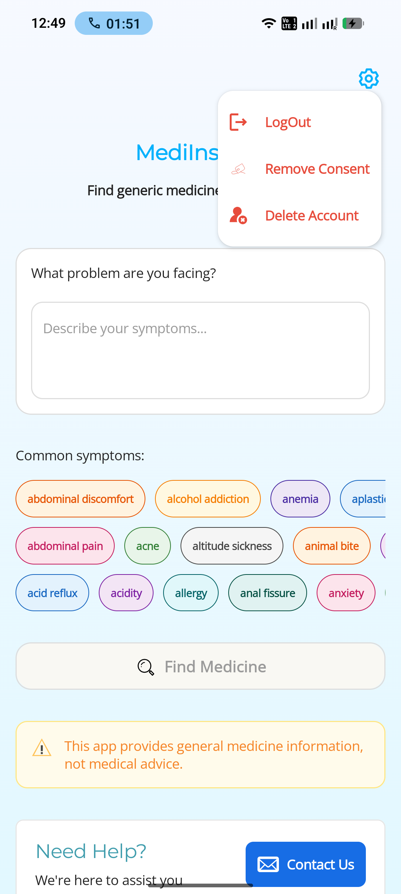

MediInspect Account & Data Deletion
At MediInspect, we value your privacy and provide simple ways to manage or permanently delete your account and associated data.
How to Delete Your Account (In-App)
The fastest way to delete your data is directly within the MediInspect app:
- Open MediInspect on your device.
- Navigate to the Settings icon (located on the Home Screen).
- Scroll down to the Account Management section.
- Tap on "Delete Account:" For account and related data deletion.
- Tap on "Delete Consent:" For removing consent.
- Confirm your choice in the popup dialog.
Refer to the screenshot below for the exact location:

Request Deletion via Email
If you have already uninstalled the app or cannot access your account, you can request manual deletion by emailing our support team:
Requests are typically processed within 48-72 hours.
What Data is Deleted?
When you request account deletion, the following data is permanently removed from our active servers:
- Account Profile: Your email address and authentication tokens.
- User Preferences: Any saved settings or app configurations.
- Interaction Data: History of symptom checks associated with your account.
Data Retention Policy
While most data is deleted immediately, please note:
- Anonymized Logs: Technical crash reports and aggregated usage stats (which do not identify you) may remain in our logs for up to 30 days for app optimization purposes.
- Legal Obligations: We may retain minimal data if required to comply with legal or regulatory obligations.